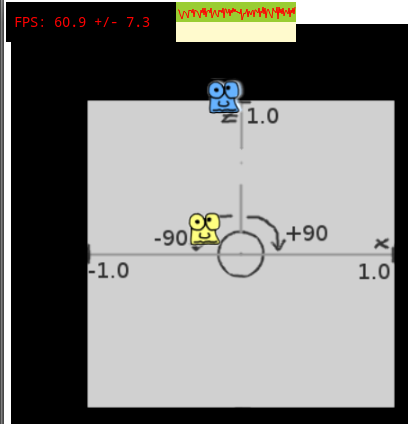

So I have demo working where I've worked out the x,z positions of 2 tracked faces. I'll try to add the height - I'll need to calculate the angle from 0 to 45 degrees based on the pixel position of the face in the camera's dumped data. Then it would be nice to get the area of the face, and use that to estimate the distance into either 0.25, 0.5, 1.0, 1.5, or 2.0 meter bands. I think I can guess because this one used 0.25 for the first face and 1.0 for the second, and it looks about right.
There are still a lot of lost frames and speaker mix-ups, so I'll need to do some extra pre-processing, and maybe also improve the camera's vision programme to get more frames.